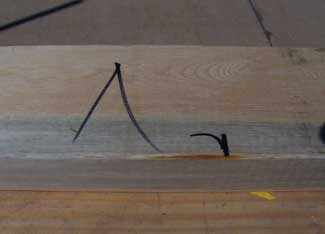
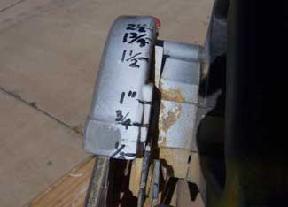

Circular Saw Safety Tips
This useful tool can be used safely if you know what to do (and what to avoid).
By Bob Johnston
April 2, 2009
Last year, more than 250,000 saw-related injuries required emergency room care. The circular saw is the most dangerous, misused and abused tool in a do-it-yourselfer’s tool shed. Here’s what I have learned about safety, proper techniques and maintenance from using a saw for 50 years.
Some History
When portable, electric circular saws were first made, the motor was on the right, the blade on the left and the handle was above the blade. When you got to the end of a cut, the weight of the motor would naturally make the saw fall off to the right and butcher the end of the cut.
Then someone came up with the bright idea of putting the motor on the left and the blade on the right. This shifted the main weight of the saw and the majority of the base to the stable side of the cut. But with the blade on the right, a right-handed person has to lean over the top of the saw to see the line of the cut.
A few years ago, Porter-Cable came out with two models (345 Saw Boss and the 423 Mag) with the blade on the left - and moved the handle so the saw is balanced. Craftsman also has a similar 5 1/2-inch saw. Now some other manufacturers are seeing the light.
If you use your right hand to run a saw, buy one with blade on the left; if you use your left hand, buy one with the blade on the right. You need to see where the blade is cutting to make an accurate cut; and working in a good position is important. The position of making a cut with an electric saw is the same as making a cut with a handsaw or hacksaw: The cut line, the blade, your forearm, elbow and shoulder should all be in one straight line.
Preparing to Cut
Now we come to one of the most overlooked, but most important procedures in using any power tool - plugging in the cord to a ground fault circuit interrupter (GFCI) power cord. (See Image Gallery.)
Keep your finger off the trigger (switch) until you are ready to make a cut. When you plug a saw into a power cord, you have created a power supply for a tool that could easily kill you or maim you for life. If you plug a tool cord in backwards (and it can be done) you have created reverse polarity, and that can kill you.
Never cut a board in the middle that is just lying on two sawhorses, it will sag or collapse about two-thirds of the way through the cut and bind the saw, causing kickback. The only time you can safely cut a board using only two sawhorses and no frame table is when you are only cutting off a short end. Even when using a frame table, make sure the boards don’t bow downward - your saw is likely to bind and kick back.
Never use a circular saw to notch or cut out a stud that is in a framed wall. The saw will buck. Use a reciprocating saw for this procedure.
Always have a safe place to put your saw. Never set it down on the blade guard or drop it on the ground. Always lay a saw on the side the blade is on (not blade up).
Don't stand on the cord. When you run out of cord, the saw could kick back and cut you.
All of the area where you are using a saw should be clean, leaving nothing that could cause you to trip and fall while carrying or using a circular saw.
Adjusting the Saw
Now we are ready to make a cut, but first set the blade depth of the saw blade to the thickness of the board to be cut plus one-eighth inch. (See Image Gallery.)
Place the nose (front) of the saw base on the board to be cut, with the blade about one-quarter-inch from the board, align the blade with the mark as straight as you can, slide your speed square up to the side of the base and grasp it with your hand to secure it to the board. The side of the saw base and the speed square should be exactly parallel.
Make the Cut
Start the motor and slowly push the saw forward until it just touches the board. If you are a little off the mark, back the saw up one-eighth inch (while it is still running) and the vibration of the saw will let you go to the left or right to line up the blade with the mark.
Push the saw slowly through the board and let the saw do its job. Do not crowd the saw (push it too fast). You will feel when the saw has cut through the board, because they will both move, only slightly, but you will see and feel them separate.
Now, take your finger off the trigger and do not move the saw. Let the motor and blade come to a complete stop. Never lift or move a saw from a cut while it is still running. This is the most important thing to remember.
Now, for those of you who have never or rarely used a circular saw and are now afraid of even picking one up, let me say that a circular saw is a safe tool - if used properly. For your first few hundred cuts, I suggest not using a speed square as a guide. Make your mark, draw a line on the board and make the cut. It takes a little longer, but it will build your confidence.
Maintenance and Other Tips
Never depend on a blade guard to protect you. Blade guards are notorious for hanging up and not going back down, especially when you drop the saw on the guard a few times. Keep the guard well lubricated and keep the housing clean of pitch and sawdust.
Check all of the screws and bolts on your saw to make sure they are tight.
If you are cutting a board and the motor slows down, you are either crowding the saw (pushing too hard), cutting on a bowed down table, have a dull blade or the lumber is pinching. If your saw slows down and starts binding, stop the motor and pry the blade out of the cut. Try to cut it from the other side or throw the board away.
Be careful, making one mistake with a circular saw could be the last thing you ever do in your life. But when used correctly, a circular saw is a wonderful tool for increasing efficiency in your building projects.
Bob Johnston, of Cloudcroft, N.M., has been a carpenter for over 50 years.
You might also be interested in reading Choose Rechargeable Tools for Safety and Versatility and You Can Build Sawhorses.
Do you have other safety tips? Share them in the comments section below.|
BOB JOHNSTON An example of dangerous sawing: pulling the saw (straight toward the operator) with no support under the plywood. |
 BOB JOHNSTON The first thing you do when preparing to cut a board is to make a mark for the cut. About 90 percent of the carpenters I know make a mark with a speed square and cut on the left of the line sometimes and to the right of the line other times. Who knows? The small straight mark on the right is the exact place you want the blade to cut and is the correct way to mark a board, the wing mark on the left of the small mark is the waste side. |
 BOB JOHNSTON Get some Wite-Out and paint the wide prong side white (wide - white). This is the white (neutral) wire in the cord. Then you won’t have to look each time and try to figure out which way the prongs fit. |
|
 BOB JOHNSTON I marked on the back of my saws the depth of cut plus one-eighth inch. 1 1/2 inch is actually 1 5/8-inch depth of cut (to be sure it cuts through the thickness of the board). This saw is set for a 1/4-inch cut but the actual blade depth is 3/8 inch. |
|
|